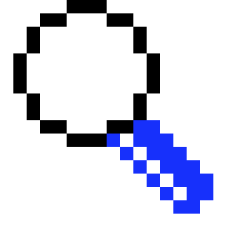
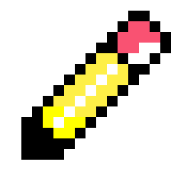

Hello World!
This is Derya's personal website
About
Thoughts
Books
Epistemology Garden

Learning about Learning
Abstract Abstracts

Trustworthiness in Qualitative Research
Data Portraits
Visualizing Uncertainty
On Writing Abstracts
What is HCI?
Why get a PhD?
Semiotics
Make a Mark
Semantic Based Economic Mapping